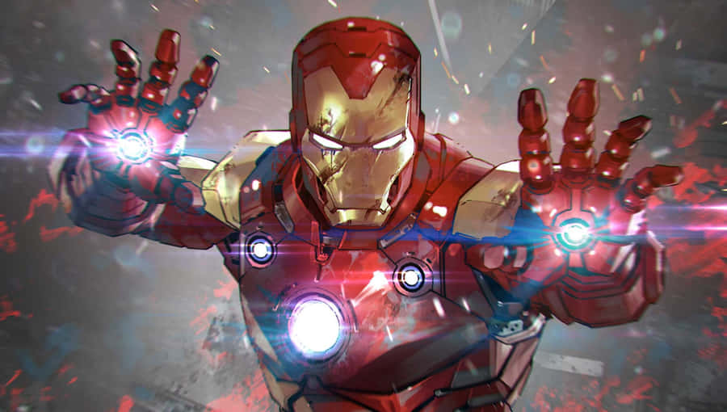

Data de Lançamento: Maio de 2008
O personagem é Tony Stark, um gênio bilionário, inventor e empresário, dono das Indústrias Stark. Durante uma viagem, é gravemente ferido e feito prisioneiro. Para sobreviver, constrói uma armadura tecnológica que mantém seu coração funcionando e ao mesmo tempo serve como arma. A partir daí, decide usar sua inteligência e recursos para combater ameaças, tornando-se o Homem de Ferro. Ao longo das histórias, Tony Stark se torna membro fundador dos Vingadores e enfrenta inimigos como o Mandarim, Obadiah Stane e organizações terroristas. Além da luta contra vilões, suas narrativas exploram dilemas pessoais, como alcoolismo, responsabilidade com a tecnologia e o peso de ser herói. No cinema, foi interpretado por Robert Downey Jr., aparecendo pela primeira vez em Homem de Ferro (2008), filme que inaugurou o Universo Cinematográfico da Marvel (MCU).
